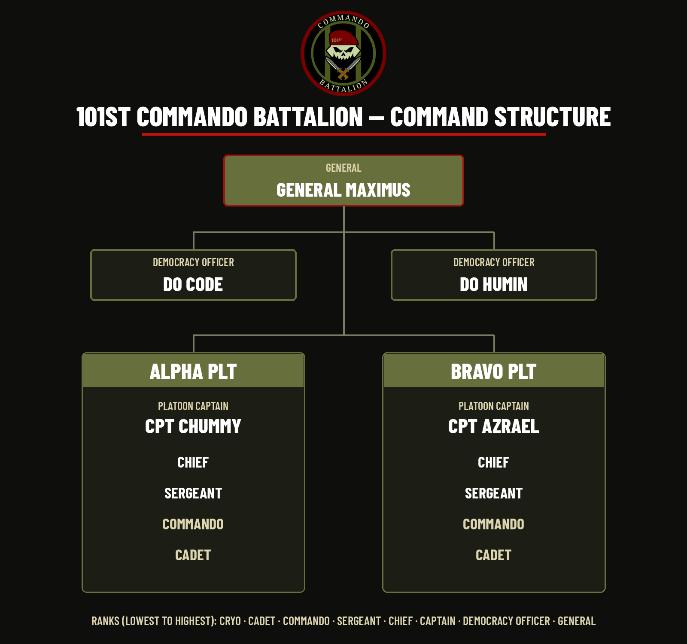

Helldivers 2 · player community
101st Commando Battalion
The 101st Commandos. Give no quarter.
A community for players who want organised squads, plain callouts, and people who stick the landing together.
Not an official Arrowhead Game Studios site.
01 — Field brief
What the unit is
The 101st Commando Battalion is a Helldivers 2 community of two platoons fighting as one for Super Earth. Squads of four, every rank welcome, no diver left behind. Wear the beret, earn the knives.
It is run by General Maximus. This website is a front door for that community. It is not an official Arrowhead Game Studios site, and it is not endorsed by the developers.
Members come here to find reliable teammates: people who mark a patrol before they throw a stratagem, who talk in plain language, and who would rather extract together than chase a highlight. Bring a microphone if you have one, and a bit of patience for the rest of the squad.
Nothing on this page is an in-game rank, a studio announcement, or a record of service. It is a fan community with a military-sci-fi name, full stop.
-
Read the ground
Read the ground before you rush the objective. A short look saves a long reinforce.
-
Squad over glory
Call the play, cover the flank, and leave with the people you dropped with.
-
Straight talk
Clear callouts beat noise. Friendly tone, no drama, no pretending this is official.
Structure
Command and platoons
The 101st Commando Battalion is led by General Maximus, with Democracy Officers DO Code and DO Humin as 2IC. The battalion fields two general-purpose platoons:
- Alpha PLT — commanded by CPT Chummy
- Bravo PLT — commanded by CPT Azrael
Ranks
- 1. GENERAL (GEN) — Server Owner. Holds overall authority over the 101st Commandos and the community.
- 2. DEMOCRACY OFFICER (DO) — 2IC of the Unit. Second-in-command, assisting the General with unit-wide leadership and affairs.
- 3. CAPTAIN (CPT) — Platoon Commander. Commands a platoon and is responsible for its personnel, readiness and operations.
- 4. CHIEF (CHF) — Platoon 2IC. Second-in-command of the platoon, backing up the Captain and leading in their absence.
- 5. SERGEANT (SGT) — Squad Leader. Leads squads in combat and is responsible for squad-level leadership and discipline.
- 6. COMMANDO (CDO) — Full Member. A trained Commando of the 101st, deployed with their platoon.
- 7. CADET (CAD) — New Recruit. Newly accepted member undergoing introduction, training and evaluation within the 101st.
- 8. CRYO — Brand New Guy in the Cryo Pod. Freshly enlisted personnel who have yet to begin their service.

02 — Enlistment
How to join
Joining happens in Discord. Use the button on this page. It goes to the 101st server and nowhere else.
-
1
Open the invite
Use the Join the Discord button. It goes to discord.gg/hpKS4ktKYc. Do not follow a lookalike link that claims to be the 101st.
-
2
Read the rules and say hello
Read #rules, then introduce yourself in #welcome. A mic is not required.
-
3
Pick a class and a platoon
In #class-and-company-selection, pick a class and a platoon: Alpha PLT (CPT Chummy) or Bravo PLT (CPT Azrael). Classes are Assault, Medic, Support, Marksman, Tanker, Demolitions, Flame Trooper, Gas Trooper, Stealth, and Engineer.
-
4
Join the clan and find a squad
Run /clanjoin. Squads are in #looking-for-group. Ping @LFG.
Lore
The Merak Legacy
The doctrine of the 101st was forged through experience. The 101st Commandos were founded by veterans of the First Legion during the March to Cyberstan. Their defining battle occurred on their homeworld of Merak, where the veterans encountered the Jet Brigade and Incineration Corps in some of the most brutal fighting they had ever experienced. With Gunship Fabricators unable to be destroyed, enemy air power remained a constant threat while the Incineration Corps turned the battlefield into an unrelenting assault of fire and destruction. Casualties reached levels never before experienced by the veterans of the First Legion. Those who survived Merak became the foundation of the 101st.
From Merak came the central lesson of the Commandos: "A force that cannot adapt will eventually be overwhelmed."
The 101st therefore rejects dependence upon a single tactic, role, or formation. They adapt. They integrate. They overcome. And they depend on nothing. Give no quarter.
03 — Current order
Operation: Tiger Eye
Major Order: "Democratic Sniper". All fronts. Ends 7:54 AM Atlantic, Thu Oct 29 (10:54 UTC). General Maximus has ordered the whole 101st Commando Battalion, Alpha PLT and Bravo PLT alike, onto every front: Automaton, Terminid and Illuminate. Automaton kills only count with the Orbital Railcannon Strike. The Illuminate goal is closest, so hit the squids hardest. Give no quarter. — General Maximus, 101st Commando Battalion
04 — Where the work happens
Recruiting lives in Discord
Recruiting, announcements, and squad ideas live in Discord. This page will not try to stand in for that. It is only the sign at the gate: who the 101st is, who runs it, and where to join.